The number is on page 7, in a footnote
You scroll sixty pages for the current limit, then again for the condition it was measured under. Your agent reads the same PDF as text soup and guesses which column was typ.
Datasheets for you and your AI agent · Open source
Drop in a PDF or a part number. SheetDiver extracts the spec tables as min/typ/max parameters, every graph and schematic, the pin table and the registers, each linked to the page it came from. Group parts into a board and it checks every rail against every datasheet. Your agent reads the same library over MCP, looks at the graphs, and records what it verifies.
Works with Claude Code, Cursor, VS Code, Claude Desktop, Codex — anything that speaks MCP. macOS, Windows and Linux. Everything stays on your machine.
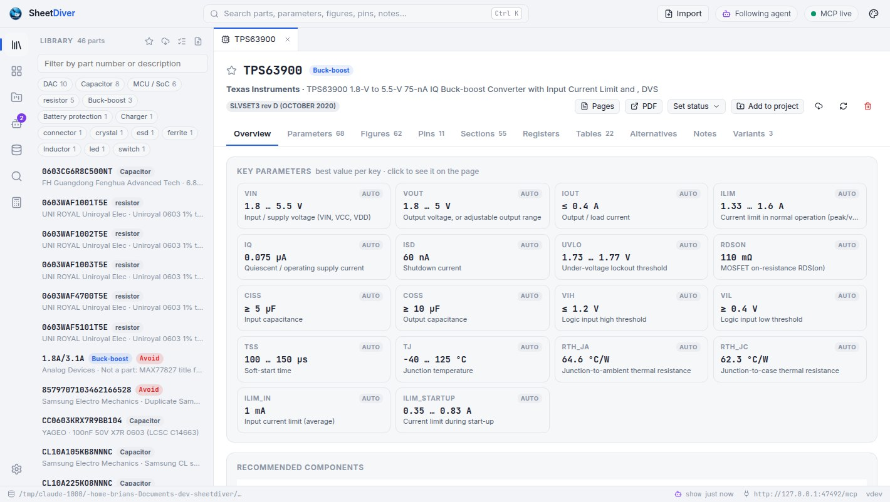
You scroll sixty pages for the current limit, then again for the condition it was measured under. Your agent reads the same PDF as text soup and guesses which column was typ.
Does 3V3 stay under the DAC's absolute maximum? How much current does the regulator's input really draw? Which capacitor does the datasheet actually ask for? It's the same arithmetic every time, done by hand.
It looked at the efficiency graph, corrected a value, picked an inductor. All of that lives in a chat transcript. Next session it starts from the PDF again.
SheetDiver makes the datasheet a database you both use: extracted once with page references, checked against your board, and corrected by whoever reads it, you or the agent.
How it works
You work in the app. Your agent works in your terminal or editor. Both read and write the same library, and whatever the agent shows opens in front of you.
Drag in PDFs or folders, paste URLs or part numbers. Sections, figures, spec tables, pin tables and registers come out, each with its page. Library →
Put the parts of a board in a project with its rails. Loads add up through the regulators; every rail is checked against every part's limits. Boards →
48 MCP tools: search, parameters, pages and graphs as images, projects, calculators. What it verifies, it records, and the library gets better. Connect →
Buck, boost, LDO and gate-drive calculators filled from the datasheets, alternatives ranked key by key, and 2.5 million catalogue parts searched offline. Catalogue →
The DAC board project shows two errors. What's wrong, and should I keep the MAX77827 for 3V3?
get_project→ C6 Audio DAC · 3 rails, 2 errorsget_parameters→ PCM5102A · DVDD abs max 2.25 V (p6)compare_parts→ TPS63900 vs MAX77827, shown3V3 reaches 3.4 V, but the PCM5102A's digital supply is rated 1.95 V maximum (page 6). DVDD has to come from its own 1.8 V LDO output, not 3V3. The MAX77827 is fine for the rail itself; I've put it side by side with the TPS63900 on your screen in case quiescent current matters on battery.
Walk me through it.
show_walkthrough3 steps: the error, the page, the alternativeStep 1 of 3 is open: the project with the failing rail. Press Next for the datasheet page behind the limit.
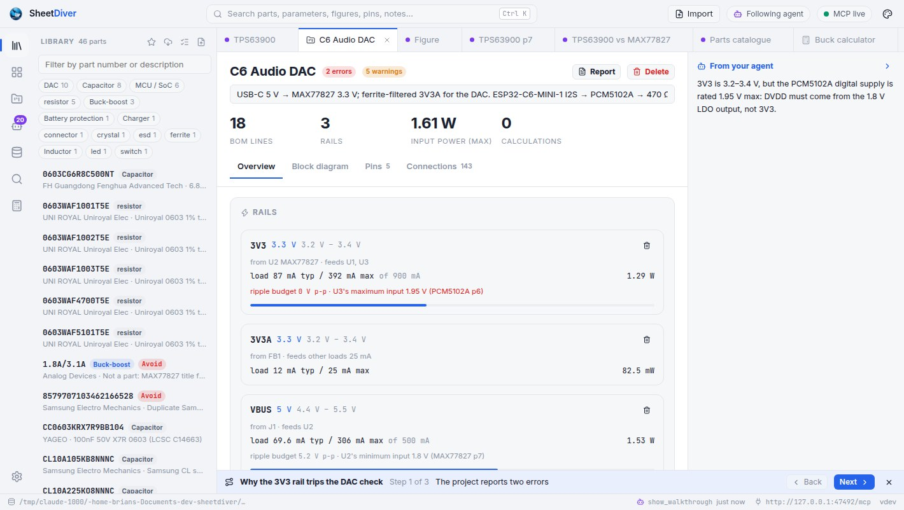
Library
Import a PDF, or just type TPS563200, and the datasheet becomes rows and figures you can search, sort, compare and correct.
vin, iout, fsw, ilim, iq, rdson, qg… Edit any cell; your values win and survive re-extraction.TPS563200DDCR, MCP1700T-3302E/TT, STM32U545VET6Q and TPS56x200 all find the right part. Revisions are detected, and a newer one updates in place.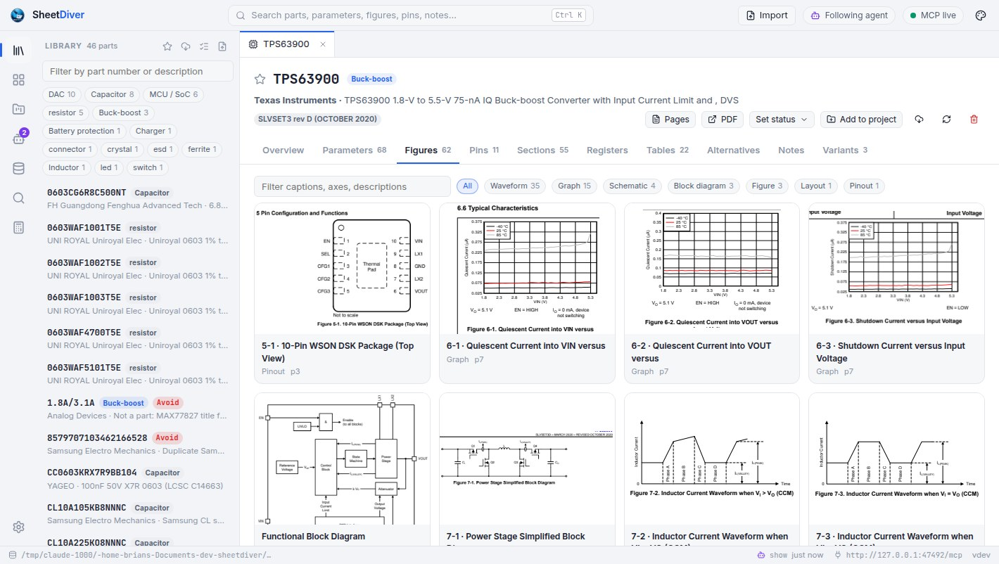
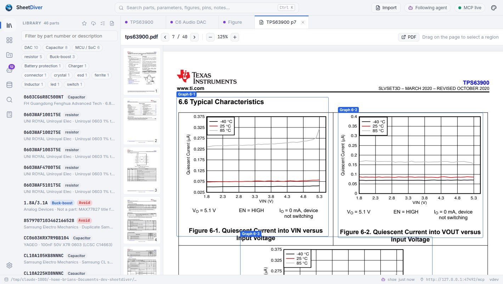
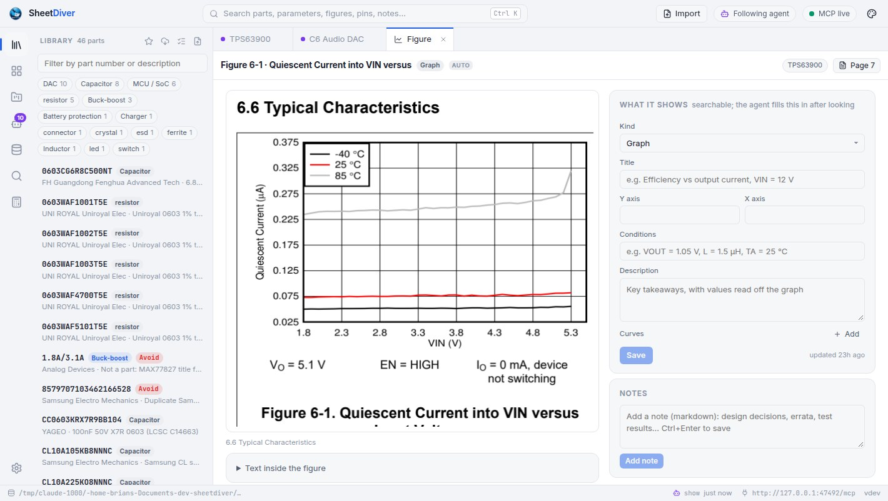
Pick a component type and see its parts side by side on the parameters that matter for it, sorted and filtered with units ("VIN ≥ 24 V, IOUT ≥ 3 A, IQ ≤ 1 µA"), every value linked to its page. Ask what else in your library could replace a part, and the alternatives are ranked key by key: ▲ better, = same, ▼ worse, drop-ins first.
Star parts and mark them preferred, approved, avoid, NRND or EOL. Projects warn about the bad ones, and agents are told to prefer the good ones.
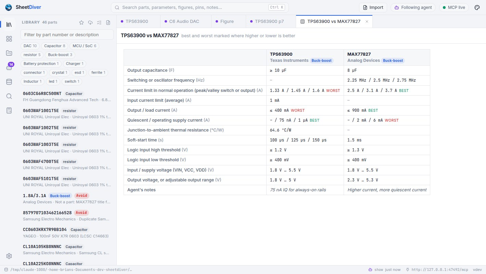
Boards
A project is a board: its BOM with designators, its rails and their currents. SheetDiver does the power arithmetic and the limit checks you'd otherwise do by hand, with the page reference on every finding.
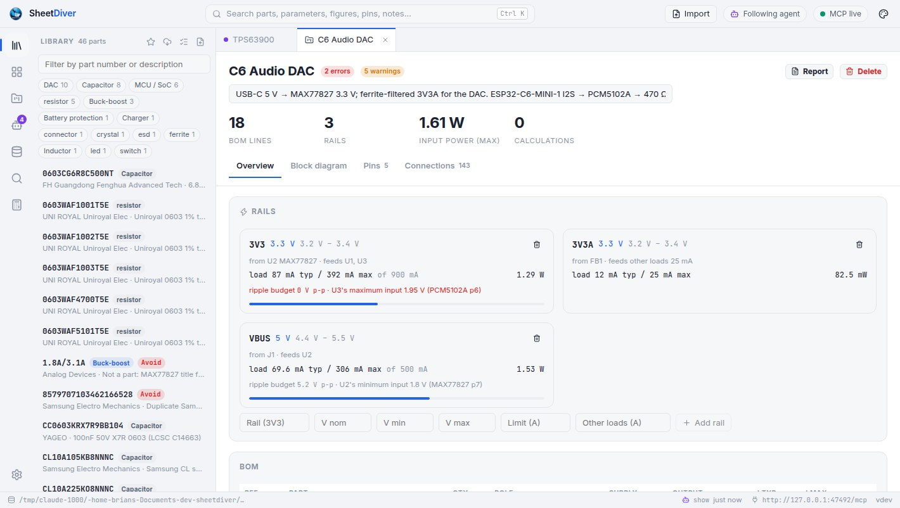
Put pins on nets, or have your agent draft them, and the board is drawn as a schematic: each part as a symbol generated from its pin table, passives with their values as standard symbols, ground symbols and power ports, net labels on the pins, functional groups in their own frames. The connection table is checked against the pin tables: pins that don't exist, supply or ground pins on the wrong net, pins that must be connected and aren't. Zoom, drag, export as SVG.
Drawn from the data, not drawn by hand: change a connection and the drawing follows.
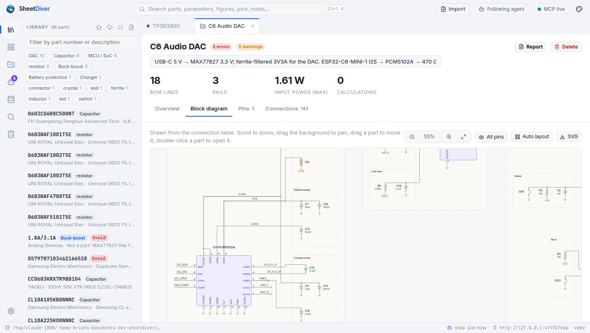
Buck, boost, LDO, MOSFET gate drive, gate divider and resistor divider. Leave a field empty and it's taken from the datasheet or the project's rails, with the page it came from; the outputs come with their formulas, the checks (minimum on-time, current limit, thermal) and suggestions. Save the result to the project.
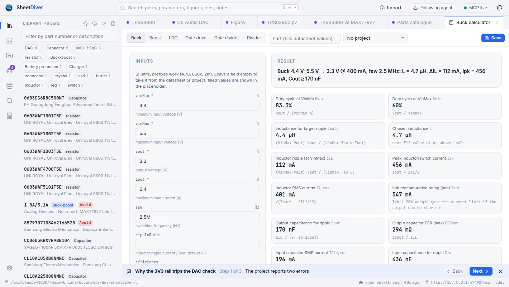
Catalogue
One click downloads JLCPCB's catalogue (the open jlcparts dataset, refreshed three times a day) so you can search it without a browser tab per vendor.
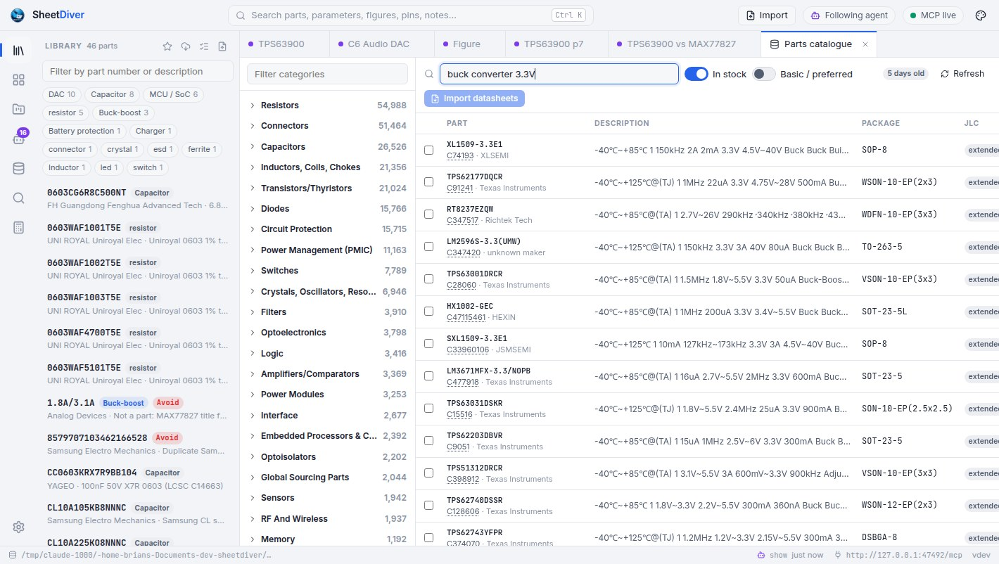
Get started
Drop a PDF on the window, or type a part number. Extraction runs locally in a sandboxed PDF engine; nothing is uploaded.
sheetdiver import tps563200
One command adds SheetDiver as an MCP server. Your agent can now read the library, look at the graphs, and record what it checks.
claude mcp add --transport http --scope user sheetdiver http://127.0.0.1:47480/mcp
"Check the extracted parameters against the electrical characteristics." "Design a 12 V to 3.3 V, 2 A supply with it." "Put my sensor board in a project and check every rail." With Follow agent on, what it shows opens in front of you.
Connect
SheetDiver runs a local MCP server with 48 tools for reading the library, recording what the agent verifies, importing, projects and calculators. Add it to your agent with one line.
The server listens at http://127.0.0.1:47480/mcp. Stdio-only clients use the built-in bridge, sheetdiver mcp; Claude Desktop gets a one-click extension from the app's MCP pill.
claude mcp add --transport http --scope user sheetdiver http://127.0.0.1:47480/mcp// ~/.cursor/mcp.json
{ "mcpServers": { "sheetdiver": { "url": "http://127.0.0.1:47480/mcp" } } }// .vscode/mcp.json
{ "servers": { "sheetdiver": { "type": "http", "url": "http://127.0.0.1:47480/mcp" } } }// In the app: MCP pill › Claude Desktop › Save Claude Desktop extension,
// then Claude Desktop › Settings › Extensions › Advanced settings › Install Extension… › sheetdiver.mcpb
// Or by hand, in claude_desktop_config.json:
{ "mcpServers": { "sheetdiver": { "command": "sheetdiver", "args": ["mcp"] } } }# ~/.codex/config.toml
[mcp_servers.sheetdiver]
command = "sheetdiver"
args = ["mcp"]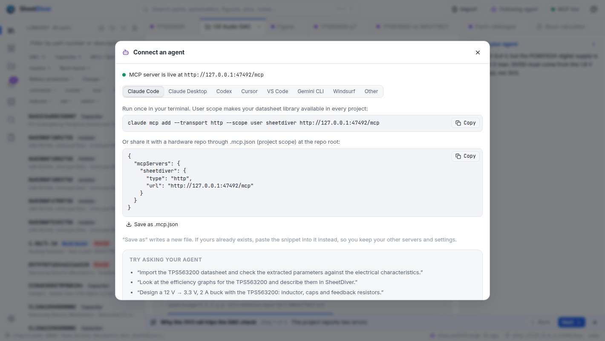
Structured answers with page references, not guesses from a PDF.
library_overview · search · list_categories · list_partsget_part · get_parameters key parameters, min/typ/max with conditions and pagesget_section · read_pages · get_page_image the text, or the page as an imagelist_figures · get_figure · get_tables graphs, schematics and tables as imagesget_pins · get_registers · compare_parts · find_alternativesget_ui_context what you have open right nowMarked as the agent's, kept across sessions, winning over extraction.
record_parameters corrected or missing spec rowsdescribe_figure what a graph shows, with values read off itrecord_table · record_pins · record_registers transcribed from the imagesrecord_recommendations the inductors and capacitors the datasheet asks forupdate_part · add_note · list_notesPut it on your screen instead of in the chat.
show a part, page, figure, section, project, comparison, catalogue search or calculator, with a captionshow_walkthrough several of those in order, stepped through with NextWith Follow agent on, each one opens in front of you.
Only when you let it: agent imports can be switched off.
import_datasheet · import_datasheets by file, URL or part numberimport_bom a CSV or KiCad BOM into a projectcheck_datasheet_updates · apply_datasheet_update newer revisionscatalog_parameters · search_catalog 2.5 million parts by specsThe same projects and checks you see in the app.
list_projects · create_project · get_project · delete_projectset_rail · add_to_project · update_project_part rails, BOM lines and currentsset_connections · get_connections · get_diagram_image the schematic, drafted and checkedexport_project_report the design review as Markdownlist_calculators · calculate buck, boost, LDO, gate drive, dividersAgents can't delete datasheets from the library.
Safety model
127.0.0.1, rejects DNS rebinding and cross-site requests. Your datasheets and designs never leave your machine.Outlines and headings, two-column pages, side-by-side graphs, spec and pin tables in the TI, ST, Microchip, Infineon and AOS styles, revisions, recommended components. Checked against a corpus of real datasheets, with exact page references so you can confirm anything.
Chinese headings, spec and pin tables, uncaptioned figures and pins described in prose. A part's text can be translated to English inside the app, offline, with an electronics glossary; the model downloads only when you ask.
Dense multi-column tables in large MCU datasheets and scanned PDFs extract poorly. The section text and page images are still there for you and the agent to read, and anything recorded takes precedence over extraction.
Releases
Every release is built and tested in CI on macOS, Windows and Linux, with checksums, an SBOM and signed build provenance for every download.
The first public release: the desktop app, its built-in MCP server, the parts catalogue, and installers for every platform.
Free and open source under the MIT license. An alpha: expect rough edges, and tell us about them.
curl -fsSL https://raw.githubusercontent.com/aitakemyjob/sheetdiver/main/scripts/install.sh | sh Universal app for Apple Silicon & Intel. Linux: .deb, .rpm, .tar.gz (x64, ARM64); needs WebKitGTK 4.1.
irm https://raw.githubusercontent.com/aitakemyjob/sheetdiver/main/scripts/install.ps1 | iex Installer or portable .zip. Uses the WebView2 runtime built into Windows.
sheetdiver serveThe same UI in your browser, and the same MCP server, on a box without a desktop. Binaries for every OS and architecture.
The builds aren't code-signed yet. The install scripts verify each download's checksum; by hand, check checksums.txt, then clear the quarantine flag on macOS or choose More info › Run anyway on Windows.